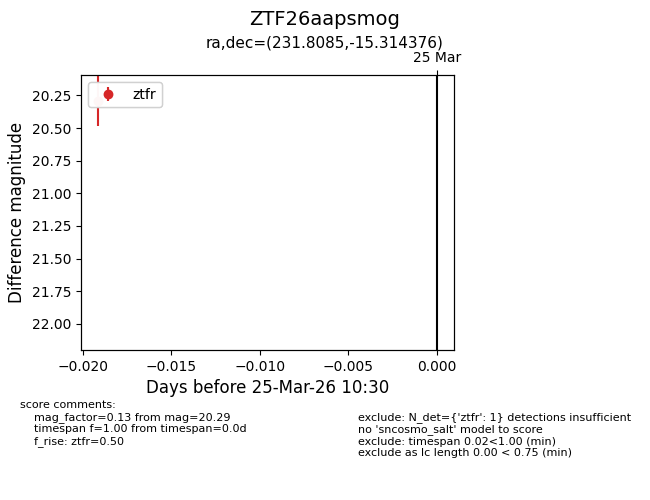
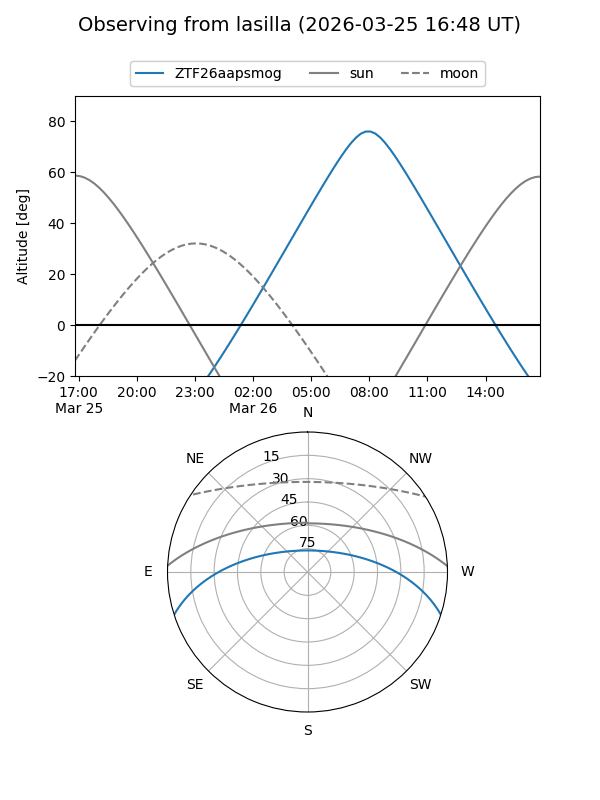
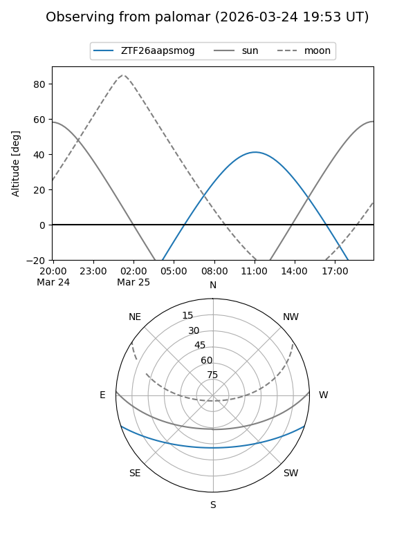

ZTF26aapsmog
Target ZTF26aapsmog at 2026-03-25 10:33
Aliases and brokers:
FINK: link
Lasair: link
ALeRCE: link
alt names
ZTF26aapsmog (ztf,fink_ztf)
Coordinates:
equatorial (ra, dec) = 231.8085,-15.31438
equatorial (HMS+DMS) = 15:27:14.04,-15:18:51.75
galactic (l, b) = (349.3463,+33.17097)
Flags:
Photometry:
last ztfr=20.29
1 ztfr detections
Lightcurve

Visibility


Additional plots